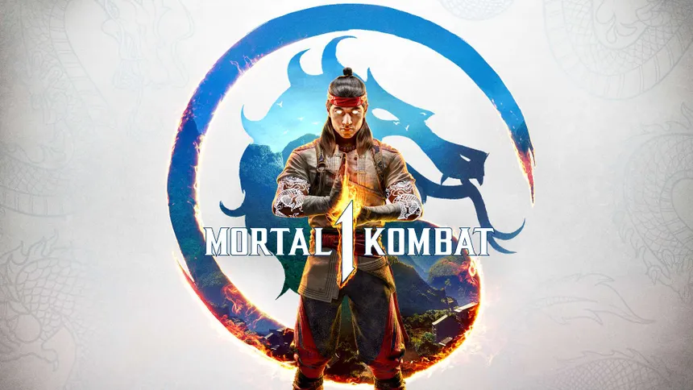

Ano de criação: 2023
País de origem: Estados Unidos
Desenvolvedora: NetherRealm Studios
Ano de criação: 2023
País de origem: Estados Unidos
Desenvolvedora: NetherRealm Studios
Mortal Kombat 1 é um jogo de luta desenvolvido pela
NetherRealm Studios e publicado pela Warner Bros. Games.
O jogo apresenta uma nova linha do tempo criada por Liu Kang,
trazendo versões renovadas de personagens clássicos como
Scorpion, Sub-Zero, Raiden e Kitana.
O jogo mantém os famosos Fatalities e introduz o sistema
Kameo Fighters, permitindo que lutadores auxiliem durante
as batalhas.
Pouco mais de 80 horas de jogo (Dados obtidos na PSN).
